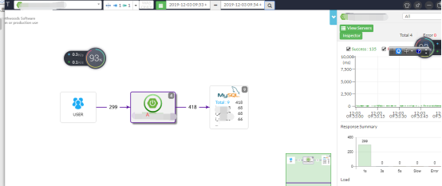
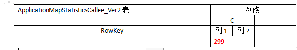
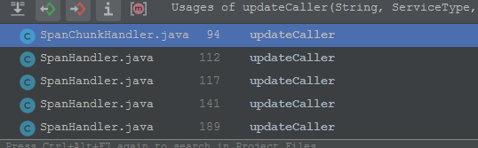
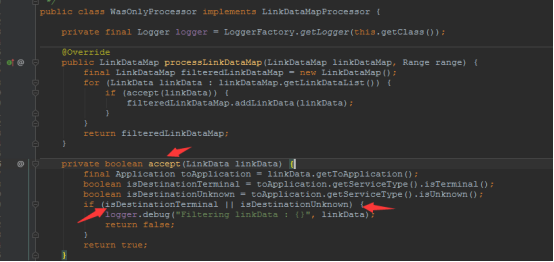
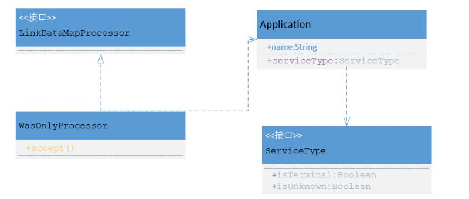

这篇文章主要是从pinpoint-web界面入手，我们的目标是弄清楚两个问题：
从下图可以看出，A显示被USER调用299次,线上数值代表着调用量。
我们F12跟踪一下接口地址：
http://webip:port/getServerMapDataV2.pinpoint?applicationName=A
&from=1575337980000&to=1575338040000
&callerRange=1&calleeRange=1
&bidirectional=false&wasOnly=false
&serviceTypeName=SPRING_BOOT
&_=1575337947426web上显示的数据，都是从hbase查询出来的，所以跟踪后端pinpoint-web工程源代码，我们可以定位到hbase的一张表：ApplicationMapStatisticsCallee_Ver2。
rowKey生成规则：
ApplicationMapStatisticsUtils.makeRowKey(...);
Qualify列名生成规则：
ApplicationMapStatisticsUtils.makeColumnName(...);我们都知道，界面查询的时候可以选择Inboud和outboud，并且最大显示4X4的关系图，
所以在pinpoint设计的时候，就选择存储双向关系：（目的就是构造界面左侧的服务地图）。比如：
TOMCAT ===》调用 MYSQL则对调用者生成如下消息：
emeroad-app (TOMCAT) -> MySQL_DB_ID (MYSQL)[10.25.141.69:3306]而对被调用者MYSQL生成：
MySQL (MYSQL) <- emeroad-app (TOMCAT)[localhost:8080]
hbase存储结构如上图所示，因为都是二进制，所以列1，其实也是byte,而不是固定的字符名。
#### 什么时候存储这个双向关系？
知道数据的底层存储结构了，下面，我们继续来跟踪，它是如何存进来的，我们搜索一下引用，发现，有5个地方调用了这个存储的api。

简单明了，那我们就逐个击破把！
①SpanChunkHandler中
在chunk的结构中，要求有spanEventList这个数据，（因为调用量 和它内部的EVENTBo 条数 是1：1），并且需要满足isRecordStatistics记录条件。
当满足这两个条件时，就会生成 A->B, B<--A, 两个关系，使其左侧服务地图调用量+1。
其他位置逻辑类似，篇幅原因，这里不再细说。
② SpanHandler,112行
③ SpanHandler,117行
④ SpanHandler,127行
⑤ SpanHandler,189行
#### wasOnly的含义
private final int callerSearchDepth;
private final int calleeSearchDepth;
private final LinkSelectorType linkSelectorType;
private final boolean wasOnly;怎么去看呢？这里提供一种思路，可能不适合所有人，大家参考一下。
从定义的变量，去理解它的含义，然后去“猜”。
callerSearchDepth: 调用者查询深度。
calleeSearchDepth：被调用者搜索深度。
除了wasOnly 和linkSelectorType不知道具体含义，上面两个应该就是用来控制搜索深度的。那我们继续跟踪代码：
这里通过判断是否是Was，新建了一个处理器。也就是说具体使用方法应该是在这个:
callerLinkDataMapProcessor 类中。
if (searchOption.isWasOnly()) {
callerLinkDataMapProcessor = new WasOnlyProcessor();
}看到这个类的accept方法相信大家，应该会有所敏感，这应该是用来判断过滤条件的.

从代码中可以看出，这里和Application有关，通过getServiceType
的两个方法来判断是否过滤。
有了这两个方法，就好办了，我们直接找它的实现就行了。
根据依赖关系，我们定位到了ServiceTypeFactory这个工厂类、DefaultServiceType及ServiceTypeProperty，具体查找方式可以通过观察这几个类了解，关系如下：

粗略的理解：WAS ONLY会过滤类似于数据库、或者是位置的节点，让界面展示清楚一些。
用程序思维理解是：它会过滤掉serviceType为Unknown或者是Terminal的节点，具体哪些节点会有这两个属性呢，我想大家可以去自行研究研究。
// Callee node that agent hasn't been installed
ServiceType UNKNOWN = of(1, "UNKNOWN", RECORD_STATISTICS);研究的时候，贴的图文太多，我整理了word，这里就不再多叙述了，有需要的小伙伴，可以加我，我发给你。欢迎关注侠梦的开发笔记
欢迎来公众号【侠梦的开发笔记】 一起交流进步